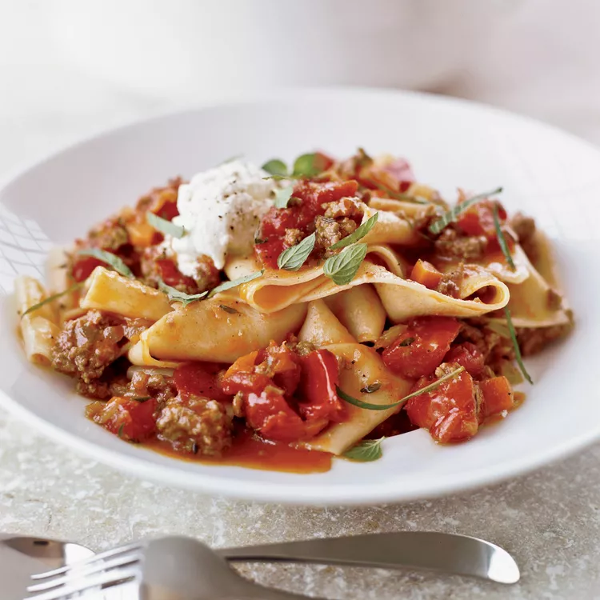
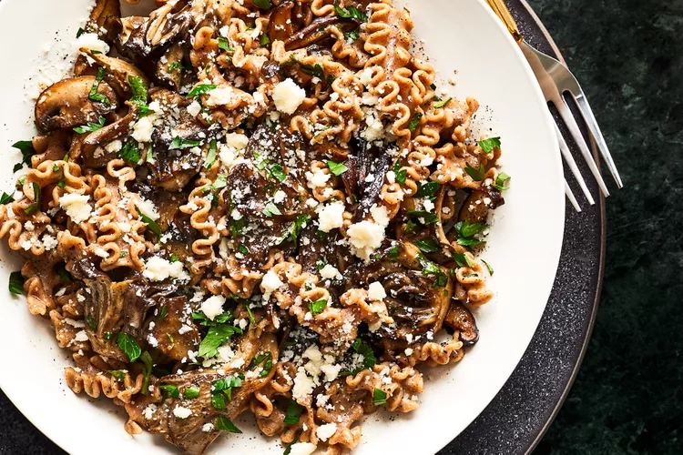
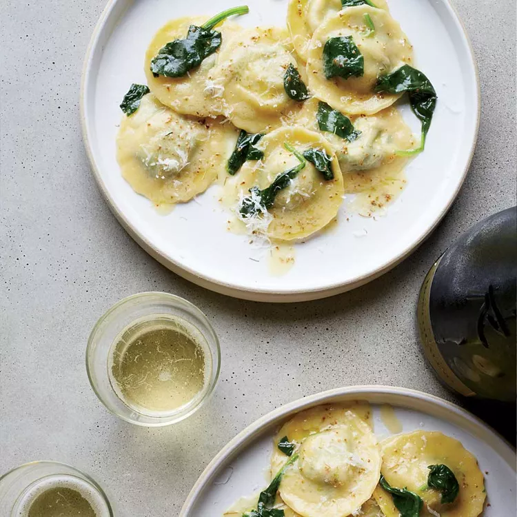

My Favorite Italian Dishes!
Pappardelle with lamb Ragù

Active Time:
30 min
Total Time:
1hr
Makes:
6
Chef:
Andrew Carmellini
Ingredients
- 3 tablespoons extra-virgin olive oil
- 1 carrot, finely diced
- 1 onion, finely diced
- 1 celery rib, finely diced
- 1 1/2 pounds ground lamb
- 2 teaspoons ground coriander
- 1 teaspoon ground fennel seeds
- 1/2 teaspoon ground cumin
- 1 teaspoon chopped rosemary
- 1 teaspoon chopped thyme
- Salt and freshly ground pepper
- 1 tablespoon tomato paste
- 1/2 cup dry red wine
- One 28-ounce can diced tomatoes
- 1 1/4 cups chicken stock or low-sodium broth
- 3/4 pound pappardelle
- 1 tablespoon unsalted butter
- 3/4 cup fresh ricotta cheese
- 2 tablespoons chopped mint
Direction
-
In a large cast-iron casserole, heat 2 tablespoons of the oil.
Add the carrot, onion and celery and cook over high heat,
stirring occasionally, until slightly softened, 5 minutes. Add
the lamb, coriander, fennel, cumin, rosemary and thyme; season
with salt and pepper. Cook, stirring, until the liquid
evaporates, 5 minutes. Stir in the tomato paste. Add the wine
and cook until evaporated, 5 minutes. Add the tomatoes and their
juices, along with the stock and bring to a boil. Cover
partially and cook over moderately low heat until the liquid is
slightly reduced, 25 to 30 minutes.
-
In a large pot of boiling salted water, cook the pasta until al
dente. Drain, shaking well. Add the pasta to the sauce. Add the
butter and the remaining 1 tablespoon of oil and toss over low
heat. Serve the pasta in bowls, topped with the ricotta and
mint.
Farro Mafaldine with Black Truffle Butter and Mushrooms

Active Time:
25 min
Total Time:
50 min
Makes:
2
Chef:
Karen Akunowicz
Ingredients
- 1 tablespoon unsalted butter, softened
-
1 1/2 teaspoons black truffle paste or finely grated black
truffle
- 1/4 teaspoon fresh lemon juice
- 1/2 teaspoon kosher salt, divided
-
6 ounces mixed fresh wild mushrooms, stemmed and sliced (about
3 cups)
- 3 tablespoons extra-virgin olive oil, divided
- 1/4 teaspoon black pepper
- 8 ounces uncooked farro mafaldine pasta
- 1 small garlic clove, thinly sliced
- 1/2 cup vegetable broth (such as Zoup!)
- 2 tablespoons finely chopped fresh flat-leaf parsley
-
1/2 ounce pecorino Sardo cheese, grated (about 2 tablespoon),
divided
Direction
-
Preheat oven to 400°F. Stir together butter, truffle paste,
lemon juice, and 1/4 teaspoon salt in small bowl until combined.
Set aside.
-
Toss together mushrooms, 1 tablespoon oil, pepper, and remaining
1/4 teaspoon salt in a large bowl until coated. Spread in an
even layer on a small rimmed baking sheet. Roast in preheated
oven until tender and golden brown, about 15 minutes, stirring
halfway through cook time. Let cool to room temperature.
-
Meanwhile, cook pasta in boiling salted water until al dente, 5
to 6 minutes. During final 2 to 3 minutes of pasta cook time,
cook garlic and remaining 2 tablespoons oil in a 12-inch skillet
over medium-high, stirring constantly, until garlic begins to
brown, about 2 minutes. Stir in broth and cooled mushrooms.
-
Drain pasta, reserving 1 cup cooking liquid. Add pasta and
truffle butter to mushroom mixture in skillet over medium-high;
toss to combine. Cook, stirring occasionally, until sauce is
emulsified, about 1 minute, adding reserved cooking liquid 1
tablespoon at a time until desired sauce consistency is reached.
Remove from heat. Add parsley and 1 tablespoon cheese; toss to
combine. Divide pasta between 2 bowls; sprinkle with remaining 1
tablespoon cheese.
Spinach and Prosciutto Ravioli

Active Time:
1hr 30 min
Total Time:
3hr
Makes:
6 to 8
Chef:
Missy Robbins
Ingredients
Filling
- 1/2 pound prosciutto, sliced 1/2 inch thick
- 1 pound curly spinach, stems discarded
- 6 ounces fresh ricotta cheese
- 6 ounces fresh mascarpone cheese
- 2 large egg yolks
- 1 cup freshly grated Parmigiano-Reggiano cheese
- Kosher salt
Pasta
- 2 1/2 cups 00 flour (see Note)
- 1 teaspoon kosher salt
- 12 large egg yolks
- Semolina flour, for dusting
-
1 stick plus 2 tablespoons unsalted butter, cut into thin slices
- 4 ounces curly spinach, coarsely chopped (4 cups)
- 2 teaspoons fennel pollen or 1/2 teaspoon ground fennel
- 1/2 cup freshly grated Parmigiano-Reggiano cheese
Direction
Making the filling
-
Dice the prosciutto and transfer to a bowl. Freeze until very
firm, 30 minutes. In a food processor, pulse the chilled
prosciutto until finely chopped, about 30 seconds. Return to the
bowl.
-
Meanwhile, in a pot of salted boiling water, blanch the spinach
until just tender, about 1 minute. Transfer to a colander and
let cool slightly. Press out all of the excess water and
coarsely chop the spinach; you should have 1/2 cup.
-
In a medium bowl, whisk the ricotta until smooth. Add the
prosciutto along with the chopped spinach, the mascarpone, egg
yolks and Parmesan; stir well. Season with salt. Cover the
filling with plastic wrap and refrigerate until firm, about 30
minutes.
Making the pasta
-
In a large bowl, whisk the 00 flour with the salt; make a well
in the center. Add the egg yolks and 1 tablespoon of water to
the well and mix. Using a fork, gradually incorporate the flour
into the wet ingredients until a shaggy dough forms. Scrape the
dough out onto a work surface very lightly dusted with semolina
flour and knead until stiff but smooth, 5 minutes. Wrap in
plastic and let rest at room temperature until softened, 45
minutes.
-
Generously dust a work surface with semolina flour. Line a
rimmed baking sheet with parchment paper and dust with semolina
flour. Divide the pasta dough into 4 pieces and work with one at
a time; keep the rest covered. Press the dough to flatten. Using
a hand-cranked pasta machine and starting at the widest setting,
run the dough twice through each of the first 5 settings, then
run it once through the sixth setting. Cut the sheet in half;
run each half through the thinnest setting one time. Transfer
the sheets to the prepared work surface.
-
Lay 1 pasta sheet on a work surface with a long edge facing you.
Spoon eight 1-teaspoon-size balls of filling in each of 2 rows
on the sheet, allowing 1 inch of space between them. Very
lightly brush the dough around the filling with water. Place the
second pasta sheet on top. Using your fingers, press the dough
around each mound of filling. Using a 2-inch fluted cutter,
stamp out the ravioli; transfer to the semolina-dusted baking
sheet. Cover with a clean tea towel. Repeat with the remaining
dough and filling to make 64 ravioli.
-
In a pot of salted boiling water, cook the ravioli in 2 batches
until the edges are tender, about 2 minutes. Using a slotted
spoon, transfer to a shallow bowl. Reserve 1 cup of the cooking
water.
-
Melt 4 tablespoons of the butter in each of 2 large skillets.
Add 1/2 cup of the pasta water and half of the chopped spinach
to each skillet and cook over moderately high heat until the
spinach is just wilted, about 1 minute. Add half of the ravioli
to each skillet and cook, stirring gently, until they are coated
in butter. Using a slotted spoon, transfer the ravioli and
spinach to a large serving bowl. Scrape the remaining liquid
from 1 large skillet into the other. Add the remaining 2
tablespoons of butter to the skillet along with 1 teaspoon of
the fennel pollen and 1/4 cup of the cheese. Cook over moderate
heat, swirling the pan gently, until the butter has melted and
the sauce has thickened slightly, about 1 minute. Scrape the
sauce over the ravioli. Sprinkle with the remaining fennel
pollen and cheese and serve immediately.